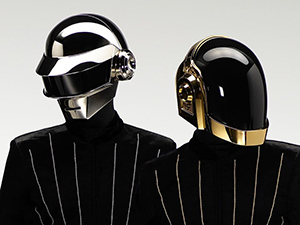
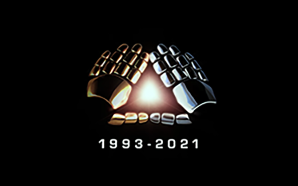

El Grupo
Daft Punk fue un dúo francés de música electrónica formado en 1993 en París por Thomas Bangalter y Guy-Manuel de Homem-Christo. Alcanzaron popularidad a fines de la década de 1990 como parte del movimiento house francés, combinando elementos de la música house con funk, disco, rock y pop.
La Separación
El 22 de febrero de 2021, el dúo francés anunció su separación a través de un video subido en sus redes sociales llamado «Epilogue». Este tiene una duración de 7:57 minutos y toma un fragmento de su película «Electroma», del año 2006, y parte de «Touch», canción lanzada en 2013 en el álbum «Random Access Memories». Hasta el momento, el único que se ha pronunciado después del anuncio de su separación ha sido Bangalter, el cual, a través de un noticiero francés, publicó un video con el fragmento final de la película «Tiempos Modernos» de Charles Chaplin; seguido de esto, vemos en una hoja un dibujo de una cara sonriente, y, posteriormente, está escrito lo siguiente: «If love is the answer, you're home», y debajo de esta frase, el nombre «Thomas».